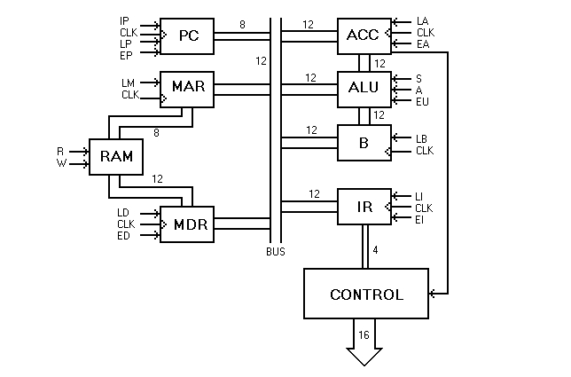
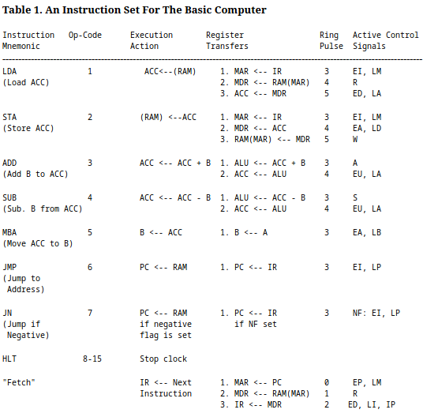
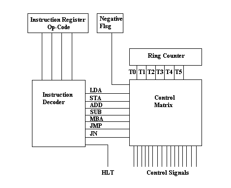
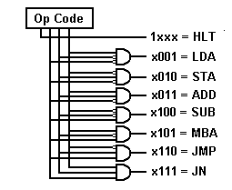
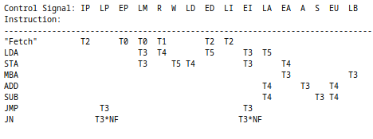
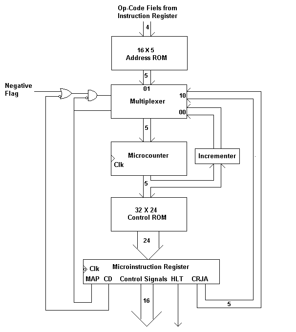
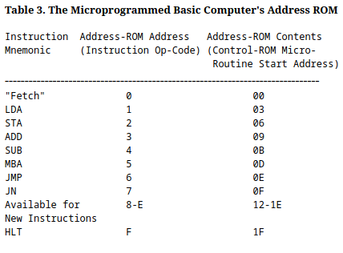
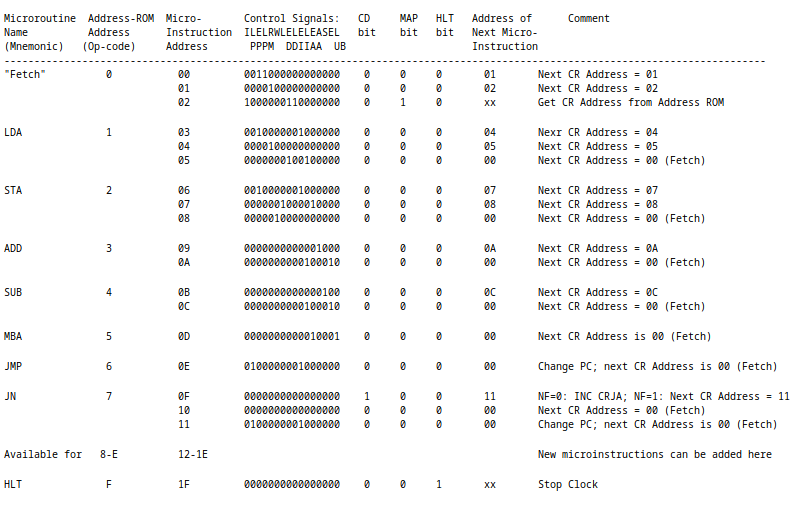

HardWiredVsMicroProgrammed;
Table of Contents
1 Intro
Describes a "big Picture" of computer systems through an example of a "simple" computer. This computer is Big Endian (reads the leftmost (most significant) bit first)
2 The Basic Computer
2.1 Two Principal functional parts
- Data path section where processing occurs
- Control section decodes instructions and leaves control sequence for Data path section
2.2 Two types of control units
- Hard wired controllers
- Micro programmed controllers
2.3 figure 1

2.3.1 Description of figure 1
Data Path Sections
- Single 12-bit-wide bus
exchanges information between pairs of registers
- Registers + 256 X 12 bit RAM
controlled by 16 control signals
- Load(L) signals
Active L clocks or loads bus contents into register on next rising pulse from the system clock
- Enabled(E) signals
Active E signal enables the tristate outputs of the register or makes contents of register available to bus
- register tranfer from example
Contents of Register A to B
- Requires EA signal (contents of A can be read by bus)
- Requires LB signal (contents of bus can be moved into B)
- Load(L) signals
2.3.2 Arithmetic-Logic-Unit (ALU)
A circuit capable of adding or subtracting two 12 bit numbers When the first bit of the Accumulator(ACC) is 1 (Negative Flag) it is considered a negative number (represented using 2s compliment)
- Two input registers
- Accumulator (ACC)
- Register B
- Two control signals
- Add (A)
- Subtract (S)
2.3.3 RAM memory
- Registers
- Control Signals
- Steps to write and read data to the RAM
- Read
- 8-bit address is stored in register MAR
- Active R signal is supplied to the RAM
- Data is copied from RAM at address specified by MAR to MDR register
- Write
- 8-bit address is stored in register MAR
- a Word is stored in register MDR
- Active W signal is supplied to RAM
- Data is copied from MDR to RAM at address specified by MAR
- Note about I/O implementation
In this specific computer design, all I/O devices are memory mapped This means that several memory locations are reserved for the I/O devices writing and reading to these I/O devices works in the same way as any other location in the ram.
- Read
3 Computer's Instruction Set
A set of all instructions that the computer can process.
3.1 Instruction
A 12-bit word made up of a 4-bit opcode and an 8-bit operand address
3.1.1 operation code (opcode)
specifies the action to be taken by the computer
3.1.2 operand
The data that the opcode operates on. Located at a memory location specified by the 8 bit address in the instruction.
3.2 Table 1

3.2.1 Table 1 description
- Op-Code
The base 10 identity of the 4 bit code(in this computer) at the beginning of every instruction. Specifies the action that will be performed, such as loading, moving values. Not shown is the Fetch Instruction (an instruction used to load the next instruction) and can be thought of as having the opcode 0000, but it really doesn't require one (in Hard-Wired)
- Opcode are specified in assembly by the Mnemonic
The Mnemonic makes the assembly code much more human readable
- LDA (Load accumlulator(ACC)) is equivalent to op-code 0001
- STA (Store ACC) is equivalent to op-code 0002
- The codes 8(1000) - 15(1111) are all equivalent to the HLT Mnemonic
- Register Transfers
This column shows how data is transferred from one register to another until the action specified by the opcode has been accomplished.
- LDA 00100010 is an example instruction
LDA (Loads data from RAM to accumlulator register)
by following the steps required to access data from RAM
- MAR <– IR moves (copies) the contents of the Instruction Register(IR) to the Memory Address Register
- MDR <– RAM(MAR) moves the data at address specified by MAR to the MDR register
- ACC <– MDR moves the contents of MDR to ACC
- ACC <– RAM is then accomplished.
- LDA 00100010 is an example instruction
LDA (Loads data from RAM to accumlulator register)
by following the steps required to access data from RAM
- Active Control Signals
This column shows the signals that are required (power to signal pin) to perform the specified register transfers. Signal Pins are shown in Figure 1
- MAR <– IR requires the EI (enable instruction register) and the LM (Load MAR) signals
- MDR <– RAM(MAR) requires the R (read) signal
4 Hard-Wired Control Unit
4.1 Figure 2

4.1.1 Description of Figure 2
Internal organization of a hard-wired control unit A hard wired version of our example computer. A control unit consists of a Ring counter, an instruction decoder, and a Control matrix
- Instruction Register (IR)
Contains the current instruction (opcode + operand) The instruction register sends the Op-code (first 4 bits) to the instruction decoder. Each line to the Instruction Decoder represents a bit of the opcode.
- Instruction Decoder
- Receives the opcode sent to it by the IR
- Interprets the opcode as a specific signal.
- Sends a signal to the control matrix corresponding to the opcode from the IR Each line to the Control matrix represents a different signal (a set of pins)
- Negative Flag
The leading bit ("negative flag") of the ACC register is fed into the control matrix allowing for Boolean logic within the control matrix.
- Ring Counter
Six Consecutive active signals that cycle continuously with every beat of the system clock
- Ring Pulse or Ring Counter Pulse When the signal becomes active (ring pulse T0 means when T0 becomes active)
- Control Matrix
4.3 Figure 4
A visualization of the inner working of the Instruction Decoder. Shows how each opcode corresponds to an output line. 
4.4 Table 2
Times at which each Control Signal must be active in order to execute the hard-wired Basic Computer's instructions. 
4.4.1 Fetch instruction
The fetch instruction is executed every time the Ring Counter loops. This facilitates the next instruction being sent to the Control unit. This instruction is actually executed during the same ring counter loop as any other instructions. So when an opcode is sent to the control matrix, fetch is executed And whatever instruction is specified by the opcode. This ensures that the next instruction is fetched by the end of the ring counter loop.
4.4.2 How does the computer choose which signals to use for an opcode?
- LM signal for example, the signal to load data into MAR according to Figure 1
LM has a T3 on the LDA and SDA Rows and a T0 on the Fetch row
- An AND operation is performed between each Tx and its instruction signal (in the column).
- An OR operation is performed between each AND operation.
- As this can be represented with bits (1s or 0s) These operations can be simplified to an arithmetic expression LM = T0 + T3*LDA + T3*STA. T0 does not need an AND because the fetch instruction is executed every ring counter cycle.
- According to the expression: LM is active when T0 is active and when T3 and (LDA or STA) is active
- JN(jump negative) Row All Tx in this row have an AND operation with the value of NF(Negative Flag) as well as the instruction signal JN. This provides another level of conditional logic based on the value of the ACC negative flag. The arithmetic expression for the LP column is: LP = T3*JN*NF + T3*JMP(Jump)
- A list of all the conditional expressions for the control signals (where * = AND, + = OR) is located in Figure 6

5 Micro-programmed Control Unit
In the Hard Wired control unit example, the signals that come from the control matrix do so because of an actual circuit that is wired to perform the conditional logic shown in Figure 5. In a Micro-Programmed Control Unit an opcode is sent to the Control unit where it fetches a list of Micro-Instructions that together perform the instruction from a memory. The control unit can be thought of as a Computer within a computer.
5.1 Micro-routine
A micro-routine is a set of Micro-Instructions that implement an instruction.
5.1.1 Micro-Instruction
Similar to the instruction in a hard-wired computer, the micro-instruction operates on the hard wired circuits within the control unit. A micro-instruction is composed of bits that might correspond to a control signal(LM for example).
5.2 Figure 7
A block diagram of an example micro-programmed control unit. 
5.2.1 32 X 24 Control ROM(Read-only memory)
- 32 24-bit long Micro-Instructions can be stored in the ROM memory A Word is 24 bits in the context of the micro-programmable Control unit
- Micro-instructions in this example are composed of two fields
- 16-bit control signal field Each bit corresponds to a control signal
- 8-bit next-address field address(in ROM) of next micro-instruction to be executed. which permits additional Boolean logic shown in Figure 8.
- Micro-instructions(Words) from the Control ROM are fed into the micro-instruction register.
5.2.2 24-bit Micro-instruction Register
- analogous to the external computer's Instruction Register.
- 16 signal lines are the same as the lines coming from the control matrix in Figure 2 and are connected to the signal pins shown in Figure 1.
- triggered by a falling clock edge See this article about signal edges
5.2.3 micro-counter register
- Analogous to the external computer's Program counter Register
- recieves input from the Multiplexer
- triggered by a rising clock edge. signal edges
5.2.4 Multiplexer (data selector)
Chooses between 3 values to send to the micro-counter register
- Output of Address ROM
- Output from Current Address Incrementer
- Address stored in next-address field of the current micro-instruction (CRJA)
- The conditional logic is shown in the description of Figure 8
5.2.5 16 X 5 Address ROM
Fed by outer computer's Instruction Register. The contents of the Instruction Register can be found in Table 3
- maps opcode of external computer's instruction to starting address of corresponding micro-routine. The first Micro-Instruction of the routine
- Address zero of Address ROM contains address of fetch routine in the Control ROM
- Other addresses in ROM correspond to the opcodes(external computer) in Table 1 addresses are of micro-routines in Control ROM
5.2.6 Note about signal edges
The micro-counter is triggered by a rising clock edge (along with all operations in data path in Figure 1). The Micro-instruction register is triggered by a falling clock edge. In a series of steps:
- micro-counter is triggered (positive edge), presenting the new Micro-instruction address to the control ROM
- Previous micro-instruction is converted to signals which are sent to external system
- control ROM presents micro-instruction Word to micro-instruction register
- Micro-instruction register is triggered (negative edge) causing it to receive the micro-instruction Word
5.3 Table 3
Mapping of Op-codes to the contents of the Address ROM in the Control Unit 
5.3.1 Example using the ADD instruction
ADD instruction has the 3 opcode which maps to the 09 micro-routine start address. The address is then goes to the multiplexer -> micro-counter -> Control ROM -> Micro-instruction register
5.4 Figure 8
Next address field of the micro-instruction register.

- CD is condition bit when CD is 1 (MAP is zero) the multiplexer's select lines produce a 00 or a 10 (binary) based on the Negative Flag of the ACC register (of external computer). 00 00 selects incrementer address, 10 selects CRJA address
- MAP causes next microinstruction to be obtained from address ROM When the MAP bit is 1 (Multiplexer's select line produce a 01(binary) (selects the address ROM))
- HLT stops clock, terminating execution of activities in the entire computer
- CRJA (5 bits) is the control ROM jump address field (next-address field).
When (CD, MAP is 0) then multiplexer's select lines produce a 10(binary), selecting the CRJA field
as the address to the next micro-instruction (in Control ROM).
- With no branches, (CD=0, MAP=0, CRJA = address of next instruction in routine)
- Last micro-instruction in the fetch routine should have map=1 to take an instruction from the address ROM
- The last micro-instruction in a routine should have 00000(binary) as its CRJA field, CD=0, MAP=0 branching back to the fetch micro-routine.
5.5 Table 4
A micro-program (set of all micro-routines) that implements described instruction set from 3.2 When loaded into Control ROM

5.5.1 Microroutine Name (Mnemonic)
The functional shortened name of each operation specified by the op-codes (Load Accumulator = LDA = 1) Used in assembly programming.
5.5.2 Columns Micro-Instruction Address to Address of Next Micro-Instruction
When taken together, forms the raw contents (changing hexadecimal to binary) of the Micro Control ROM
- Address-ROM Address (Op-code)
input of instruction from external computer that is equivalent to first address of Micro-instruction in micro-routine.
- Micro-Instruction Address
Micro-Instruction addresses (2 bits) listed sequentially as part of a micro-routine
- LDA micro-routine = Opcode 1
- 03
- 04
- 05
- LDA micro-routine = Opcode 1
- Control Signal Field
Same order of signals (bits) as the in Table 2 bits are equivalent to signals which are equivalent to pins.
- CD
Conditional bit, when 1 causes multiplexer to depend on value of NF if MAP bit is 0
- MAP
When MAP bit is 1, multiplexer sends address of the first Micro-Instruction for the next micro-routine
- Halt
When HLT bit is 1, the Micro-Instruction Register will trigger the HALT signal, stopping the clock.
- Address of Next micro-instruction
Only matters if HLT and MAP are not 1 (arbitrary values). The Micro-Instruction Address of the next Micro-Instruction in a non-branching program. Refer to description of Figure 8 for more explanation.
5.5.3 Comment
This column provides a simple explanation for what happens in the micro-programmable control unit after each Micro-Instruction.
5.6 Fetch micro-routine
- Control ROM addresses 0, 1, 2 (3 Micro-Instructions)
- Micro-Instruction 0
- Activates control Signal bits EP, LM
- Moves data from the Program Counter Register to the Memory Access Register
- MAR now contains address in RAM of the next instruction
- CD and MAP bits are zero, next Micro-Instruction corresponds to the address in the CRJA field (Micro-Instruction 1)
- Micro-Instruction 1
- Activates control Signal bit R
- Reads the data at adress MAR into Memory Data Register from RAM
- CD and MAP bits are zero, use CRJA field again (Micro-Instruction 2)
- Micro-Instruction 2
- Activates control Signal bits ED, LI, IP
- ED, LI moves the Word from MDR to the Instruction Register
- IP increments the PC Register
- New instruction is in IR
- PC now points to the next instruction
- MAP is now 1, so the next micro-instruction is from Address ROM (specified by op-code)
- Signal pin description is in Figure 1
- Micro-Instruction 0
5.7 JN micro-routine
- Control ROM addresses 0F, 10, 11
- Micro-Instruction 0F
- Does nothing except set the CD bit to 1
- Execution of the next micro-instruction now depends on value of Negative Flag
- If NF is 0, increments Micro Program counter 0F + 1 = 10, Micro-Instruction 10
- If NF is 1, uses CRJA field (Micro-Instruction 11)
- Micro-Instruction 10
- Does nothing (no set signal bits)
- MAP, CD = 0, uses CRJA field (Micro-Instruction 00 (Fetch routine))
- PC is not altered, so next instruction is executed normally
- Micro-Instruction 11
- Micro-Instruction 0F
6 Hard-Wired vs. Micro-programmed Computers
- Large majority of computers today are micro-programmed
- Micro-programmed computers are much more flexible you don't have to make a new computer to change instruction set, only alter Control ROM
- Changing the firmware is the same as changing the contents of the Control ROM
- Hard-Wired architecture can not be easily(almost impossible) changed New architecture has do be designed at the hardware level (can't add new instructions easily)
- Hard-Wired computers are faster (micro-program doesn't have to react to input) and can be easier to manufacture (cheaper).